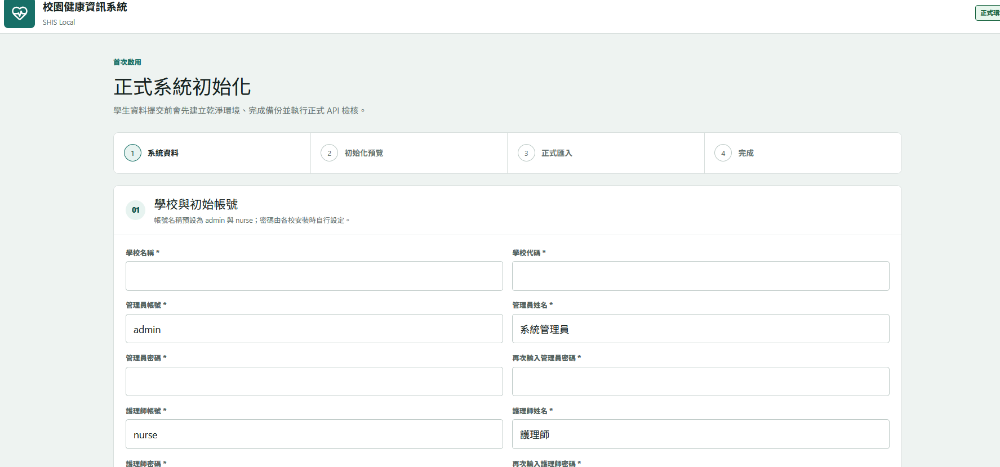
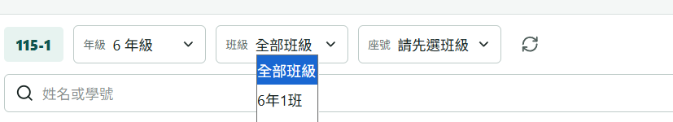
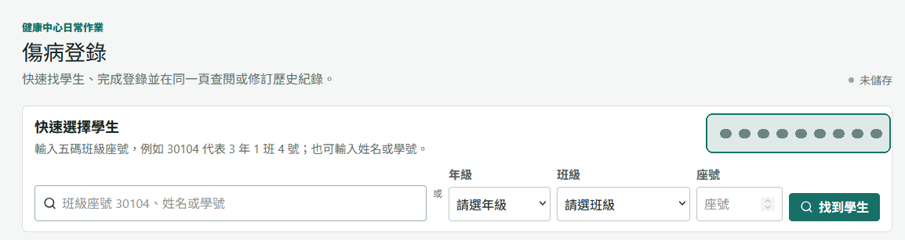
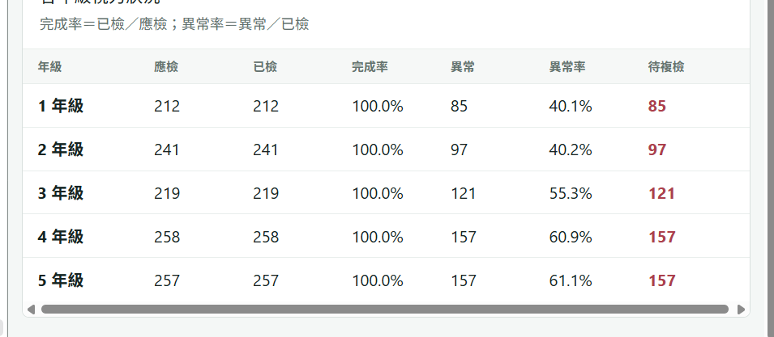
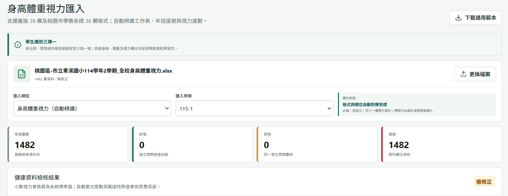
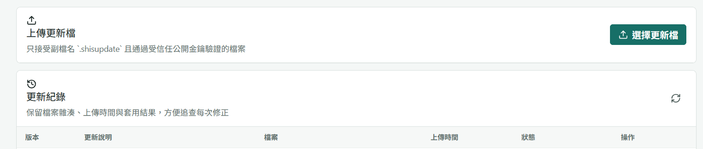

緊急處理
直接開啟「傷病登錄」，輸入五碼班級座號，例如 30104。
校園健康中心工作手冊
依護理師實際工作順序整理，涵蓋學生查詢、傷病登錄、追蹤、報表、資料匯入、備份與系統更新。
開發者：桃園市青溪國小 黃志豪
首次使用

日常作業
直接開啟「傷病登錄」，輸入五碼班級座號，例如 30104。
開啟「傷病紀錄查詢」，可依日期、班級、學生或待追蹤篩選；工作台的「連續受傷警示」可直接點選學生，開啟該生個人傷病紀錄。
從工作台查看今日傷病、連續受傷、通知與待追蹤項目。
學生與學籍
先選年級，再選班級與座號；也可以直接輸入姓名或學號。點選學生後，詳細資料會移到畫面可見位置，避免拉到頁面最下方。

健康中心核心流程

傳染病通報教學
以青溪國小表單欄位為基礎，執行範例程式即可在自己的 Google 帳號建立一份空白通報表及回覆試算表，不含任何真實學生資料。手冊可離線閱讀，建立 Google 表單則需要連線及學校核准的帳號。
下載表單產生程式（.gs） · 開啟 Google Apps Script（新視窗）
敏感健康資料
傷病登錄選到學生後，具權限者可在同一頁查看重要健康提醒與照護資訊。不具權限帳號無法從 API、匯出檔或網址繞過限制。
決策與追蹤

資料交換

支援網站 17 欄格式與桃園市學務系統匯出名冊；國小可使用 1–6 年級，國中可使用 7–9 年級，國小國中並存學校可使用 1–9 年級。
可匯入桃園格式，亦可匯出 14 欄舊式 Excel，畫面明確標示「提供桃園學務系統匯入使用」。
管理員作業

學生主檔、編班、健康與傷病資料、匯入批次、報表、畢業或轉出封存及相關檔案。
學校與學期設定、管理員與護理師帳號權限、系統代碼、備份排程、更新紀錄及獨立稽核紀錄。
設備汰換與災難復原
發布前必讀
姓名、身分證或居留證號、學號、生日、電話、地址、家長姓名、班級座號與可識別健康內容。
優先裁除資料列；無法裁除時以不透明色塊覆蓋原始像素，不只使用模糊效果。
放大圖片檢查文字、檔名、瀏覽器網址、提示訊息與背景區域，不得殘留可辨識資訊。
Developer & Copyright
系統開發者／設計者
Qingxi Elementary School - Gavin Huang
本系統的功能概念與傷病處理流程，延伸自原有傷病系統及校園健康中心既有作業需求；開發者負責將需求轉化為可在校內主機獨立運作的程式，完成程式實作、安裝部署、備份還原與更新機制。
縮短學生查找與傷病登錄步驟，讓重要健康提醒、家庭聯絡及歷史紀錄在需要時清楚呈現。
採校內主機與 PostgreSQL，支援備份、還原、移轉及離線更新，避免日常作業依賴外部雲端服務。
以帳號權限、敏感資料遮罩、重新驗證與稽核紀錄保護學生個資及健康資訊。
透過簽章更新檔修正錯誤與增加功能，更新程式時保留各校既有資料與設定。
Copyright Notice
學生健康資訊系統（SHIS Local）的程式部分，由桃園市青溪國小黃志豪自行開發。
本系統的功能概念、傷病登錄流程、健康中心業務方法與資料欄位，係延伸原有傷病系統及既有校務需求；開發者不主張對上述概念、流程、方法或原有系統功能享有著作權。
開發者主張的著作權範圍，限於自行完成且具原創性的原始程式碼、目的碼、程式模組及其具體程式表達。著作人依法享有姓名表示權；使用、部署、備份、移轉或依法修改該程式時，應保留合理且清楚的程式開發者署名。
學生資料：各校匯入及建立的學生、家庭與健康資料，不因使用本系統而移轉給開發者，仍由使用學校依個人資料保護及校務規範管理。
第三方元件：第三方套件、開放原始碼程式及原有系統內容不屬於開發者的程式著作權範圍，分別適用原權利人或原授權條款。
權利範圍：本聲明不限制他人以自己的程式表達實現相同或類似功能。實際著作權與授權關係仍以中華民國著作權法、任職關係、契約及個別授權文件為準。
© 2026 桃園市青溪國小 黃志豪。保留所有權利。
Release Notes
排除問題
確認主機服務已啟動、網址使用主機固定 IP 與 3000 連接埠，並檢查 Windows 防火牆允許校內子網路連入。
確認目前登入帳號角色；護理師不應看到帳號管理、系統設定、備份還原或系統更新等管理功能。
不能從其他電腦或登入頁直接重設。請在安裝主機使用 Windows 開始功能表的「SHIS Local 管理員密碼救援」，完成本機管理員驗證、備份與臨時密碼設定。若找不到工具，先使用最新版完整安裝程式修復。
先確認匯入學期、檔案格式與學生名冊是否一致。錯誤列不會寫入，可修正共同原因後重新檢核。
服務更新時可能短暫無法連線。等待數分鐘後重新整理；若仍未完成，由管理員查看更新紀錄與安裝記錄。
確認使用支援 UTF-8 的新版瀏覽器。Excel 匯入請避免以文字編輯器改存造成編碼或日期型態變化。
找不到符合的章節，請更換搜尋文字。